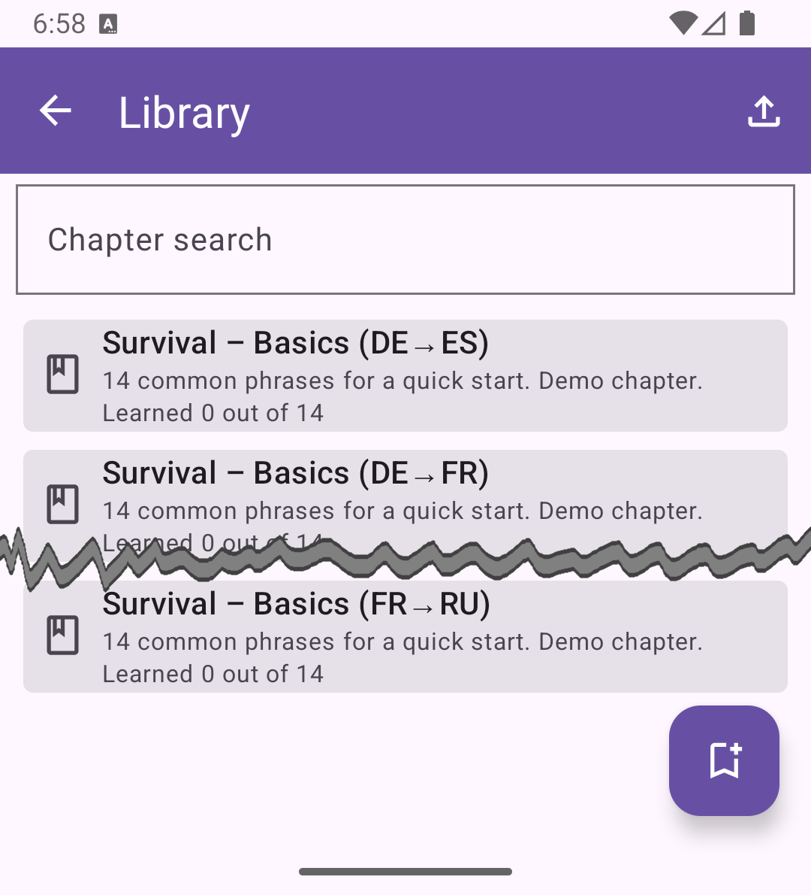

Library
The Library is the section where all learning materials are stored and managed. The main structural unit is a Chapter, which groups together individual Topics. Each chapter defines the languages used in its topics — this saves time when creating playlists.
The library screen displays chapters as cards, each containing:
- a title and description,
- short statistics showing how many topics are inside.
At the top of the screen there is a search field for quick lookup by name or description. On the toolbar (top app bar) there is an Import button that allows loading one or several chapters from the device’s storage. In the lower-right corner, a floating button creates a new chapter from scratch.
Main library screen showing the list of chapters
Available actions
In the list you can:
- Tap on the icon or long-press on a card to enter multi-selection mode, allowing you to select multiple chapters and perform bulk actions — delete or export.
- Tap once on a card in normal mode to open the chapter editor.
Selection mode with highlighted cards and toolbar action buttons